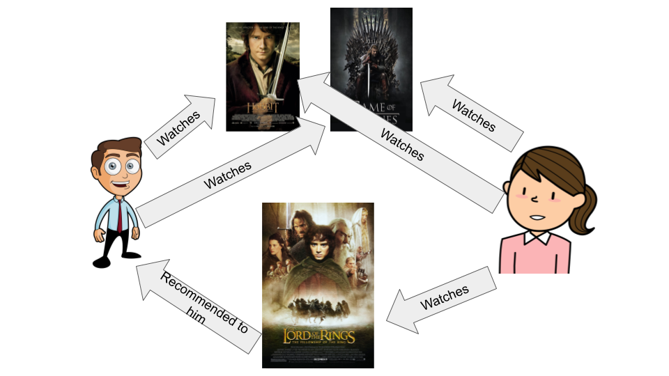
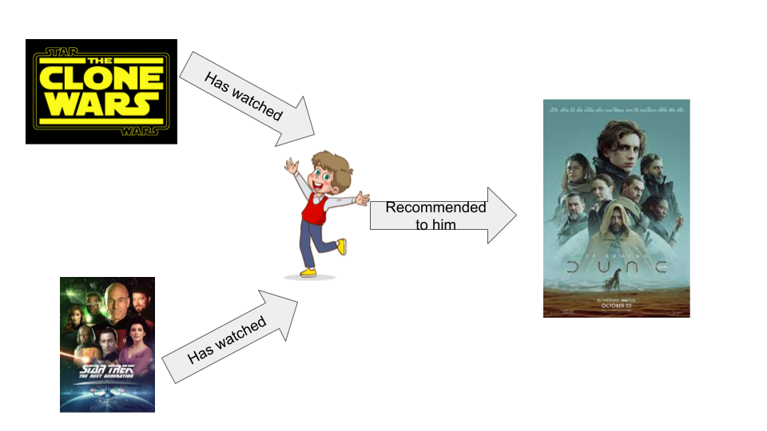
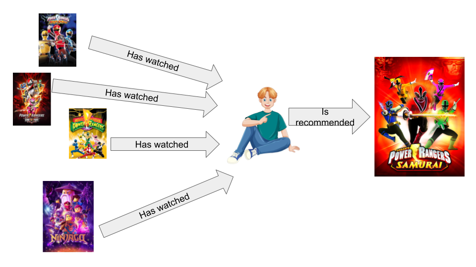
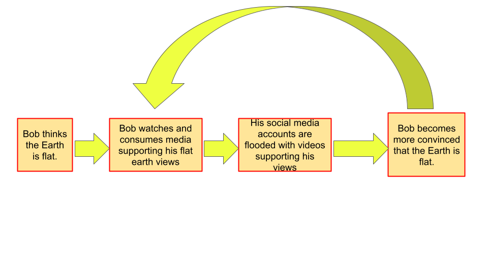

Recommendation Algorithms are information filtering systems used to present a user with information that is apparently relevant and applicable to the user's interests and needs. Usually, this information can come in the form of literal recommendations or advertisements that advertise products that a user might be interested in. In order to present such information, the algorithm gathers data about the user about various topics such as the user's watch time and consumption of certain genres of media, along with the user's interactions on social media platforms. There are many forms of recommendation algorithms; however, most fall under these three categories: collaborative filtering, content filtering, and context filtering.
Collaborative filtering recommends items to a user based on the reactions and preferences of other users who have consumed similar digital media.
Content filtering recommends content to a user based on the attributes of previous media and items viewed by the user.
Context filtering uses the patterns seen in a user's actions to predict the probability of the user's next actions in order to generate the appropriate recommendations.
Many large companies such as Spotify, Netflix, and Instagram use recommendation algorithms in order to increase viewer retention and interest on the platform, to generate greater revenue, and to provide a better experience for their users. Despite the seemingly good intentions of these algorithms, there are some negative side effects. The inherent logical and computing nature of these algorithms can lead to inaccurate recommendations which may annoy a user. Moreover, the appeal of these algorithms may lead to an overuse, leading to too many recomendations appearing to the user.
Feedback Loops are similar to recommendation algorithms in that both utilize a user's previous interactions in order to predict a user's potential interests and appealing forms of content for the user. This concept is best shown through the echo chamber effect, also called the filter bubble effect.
The main idea of the echo chamber effect is that as a user's preferences and opinions become more clear, users will often find their opinions or similar views echoed back to them on digital platforms. This can result in users becoming tunnel visioned as they are only exposed to media that goes along with their own views. With such limited exposure, the echo chamber effect can allow users with misled opinions to become only further misled from the truth. This is called confirmation bias.
With such strong preconceived notions, users can begin to think less critically of outside information due to their biased thinking. Both recommendation algorithms and feedback loops are very similar in their marketing intentions and process. Both of these are used as strategies to draw users back to a certain platform, and both form recommendations from a user's past experiences.Conspiracy theories and algorithmic amplifications have a strong cause and effect relationship, which creates problems for the world. Firstly, conspiracy theories on their own are often found to be misleading in nature and can present false information, resulting in further division and arguments between people, both digitally and in the real world. This includes conspiracy theories such as the Flat Earth theory, the faked moon landing, and the theory that 9/11 was an inside job. Despite this, conspiracy theories are still very interesting and seemingly engaging to audiences, which may lead to users consuming more media and content relating to conspiracy theories on the Internet and digital platforms. Due to the increased consumption of such media, algorithms, such as recommendation algorithms, may begin presenting users with more information relating to the conspiracy theories and may indirectly spread the conspiracy theories. Some have argued that with the spread of conspiracy theories containing misleading and harmful information, the social media platforms which spread the information are also guilty of misleading audiences. This indirectly suggests that social media companies may be prioritizing their own profit, while being well aware of the bad information they are spreading.
Most digital platforms and major companies have very similar motivations. Nearly all of these platforms aim to maximize the amount of user engagement and viewing time on their platform. In order to accomplish these goals, these platforms utilized the aforementioned recommendation algorithms and other software programs. As mentioned before, the use of these technologies, along with a platform's incentive, can lead to misinformation being spread in order to maximize the platform's success.
With the many benefits that can come with the use of algorithms such as recommendation algorithms, there will always be some risk associated with it. The efficiency and power these algorithms hold give the controller of these algorithms the ability to create huge changes through digital means. Conspiracy theorists can alter images or data and spread it by promoting their content with misleading titles and controversial content. A similar incident occurred when conspiracy minded individuals supporting the "Pizzagate" conspiracy theory created content supporting their conspiracy theory by taking images out of context, editing the images, and spreading the information through platforms such as Reddit and 4Chan. Content creators on digital platforms can also exploit and game the system in order to make more profit and get more benefits. While it is not necessarily as extreme as the previously mentioned example, it can still spread misinformation. A clear case of this are YouTubers who have become familiar with the YouTube Algorithm and have posted content specifically designed to give them the most profit and attention. This can come at the cost of genuine and factual content, since YouTubers may spread misinformation which can give them more views than posting the truth.
https://medium.com/mlearning-ai/what-are-the-types-of-recommendation-systems-3487cbafa7c9
https://libraryguides.mdc.edu/FakeNews/FilterBubbles
https://www.livescience.com/11375-top-ten-conspiracy-theories.html
https://www.rollingstone.com/feature/anatomy-of-a-fake-news-scandal-125877/